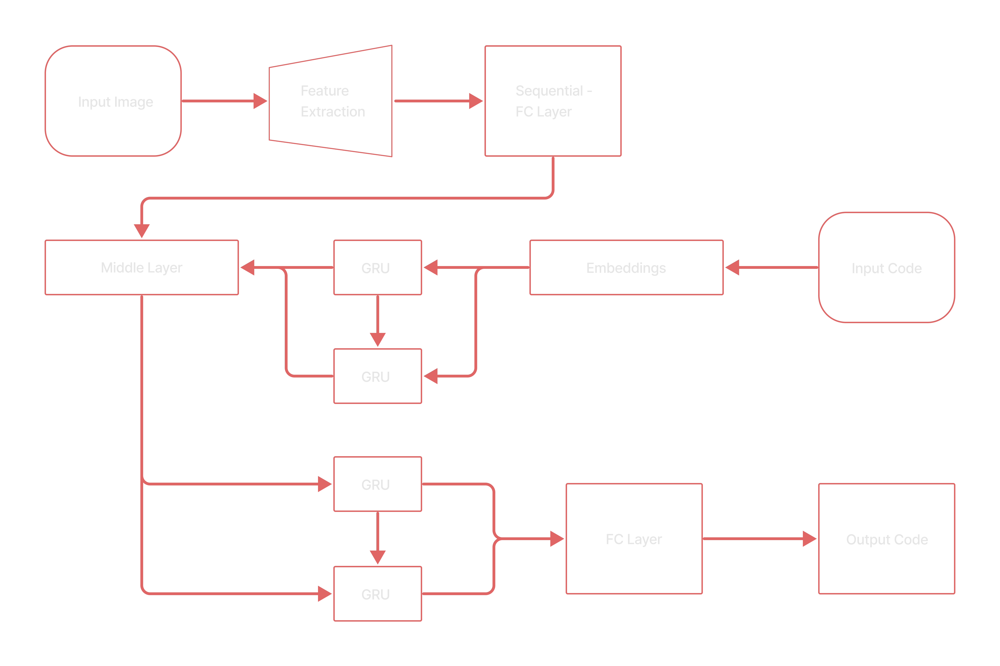
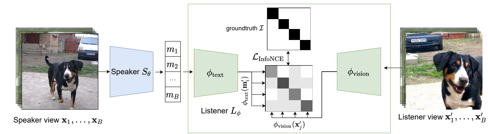

Taneem Jan

Hello! 👋
I'm a student at University of Engineering and Technology Peshawarin my senior year, majoring in Computer Science with a concentration in Artificial Intelligence. I mostly study, doing research and work on deep neural networks and computer vision in one of the AI Labs under the supervision of Dr. Zakira Inayat to make machines able to learn.
Other than studying at the university, previously I've worked as an Intern Machine Learning Engineer at a German company NAECO Blue GmbH. Where I worked on real time and time series data regarding the solar and wind power plants. During the internship, my job was to find a weather API so that the teams don't need to overlook to any other resources for any kind of data. I talked to different organizations and then tested out their weather APIs for forecast and historical data in terms of annually, monthly, weekly, daily, hourly and minutely data. My testing and analysis models made the company able to decide on APIs, I recommended. The data pipeline I developed for the company, the analytical charts and graphs, they were following to find the best spatial and temporal resolution data for a specific location.
Email: 18pwbcs0658@uetpeshawar.edu.pk
Research Interests
I am interested in computer vision, image processing, code generation and model optimization. Much of my work and studies revolve around detection, segmentaion, localization, classification, generation etc. in and from images.
Projects Highlights
|  |
HTML Code Generation from Images with Deep
Neural
Networks
Final Year Project, University
Using the image captioning technique to convert images to words and sentences with the
use of deep neural networks. Scanning and featuring images with CNN, encoding those
features to words and then decoding those features to generate HTML codes.
Taneem Ullah Jan, Nadir Shah, Mohammad Usman, Dr. Zakira Inayat
|
|  |
Image Captioning Paper
Implementation
Personal Project
Using the deep neural networks to convert an image to text, giving an image to a network
and in result it is generating a caption for that image.
Taneem Ullah Jan, Nadir Shah, Dr. Zakira Inayat
|